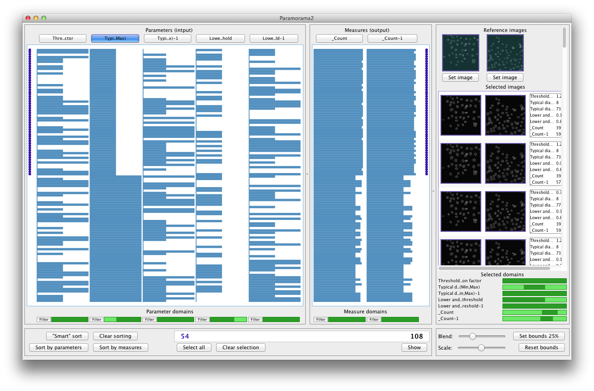

Introduction | Getting started | Sorting | Filtering | Selection | Download | Contact
(See video)
In the previous section we narrowed down the visible data to a subset of the original data set. You are probably itching to see what the actual image-based output looks like.
To see a preview of a single row, hold down the SHIFT key. The images corresponding to that row will be displayed toward the right of UI as long as SHIFT is held down. For example:
You can also select multiple rows and load the corresponding images into the right-hand view. Move you mouse cursor over the data items in the column-based visualization (without holding down SHIFT). You will notice that the rows that are highlighted depend on two things: (1) the row under the mouse cursor, and (2) the column under the mouse cursor. Paramorama 2 will automatically highlight all adjacent rows that have the same value for the column under the cursor. (To highlight single rows, hold down the shift key.)
Move your mouse over the first "step" of the "Typical diameter of objects, in pixel units (Min, Max)". Apart from highlighting half the rows currently displayed, the number of highlighted rows (54, in this case) is also shown in blue at the bottom of the UI. Now click with your mouse to select these data items. You should see:
Next, click on the button labeled "Show" at the bottom right of the UI. This will show the actual segmentation results at the right of the UI:

The segmentation results are outlines of the cells that had been detected in the original input images. The images are shown in columns corresponding to the two input images (which are shown at the top above the output images and labeled "reference images"). The top-to-bottom order of these images match the order of the selected data items. The output images are displayed by laying them over the original input images. There are a few more things you can adjust to suit your analysis needs:
The above functionality allows you to investigate the quality of the sementation results. For example, by scrolling through the list of images can can determine that most cells are accurately segmented. Based on such a finding, we can draw conclusions in terms of the best (or optimal) input parameters to use for our image analysis algorithms.
Finally, at the bottom right of the UI is a visual summary of the parameter and output measure domains that the selected images correspond to. In the example above, we can see that for the currently selected output, "Threshold correction factor" takes on all its sampled values (first line of the visualization) while for "Typical diameter of objects, in pixel units (Min, Max)" only a subset of the sample values are assumed (second line). When you move the mouse cursor over an image, the values that image corresponds to are highlighted in this visualization.
This video shows what selection looks like in Paramorama2. For full details, please see the description above.
(c) Copyright 2012, A.J. Pretorius. All rights reserved.